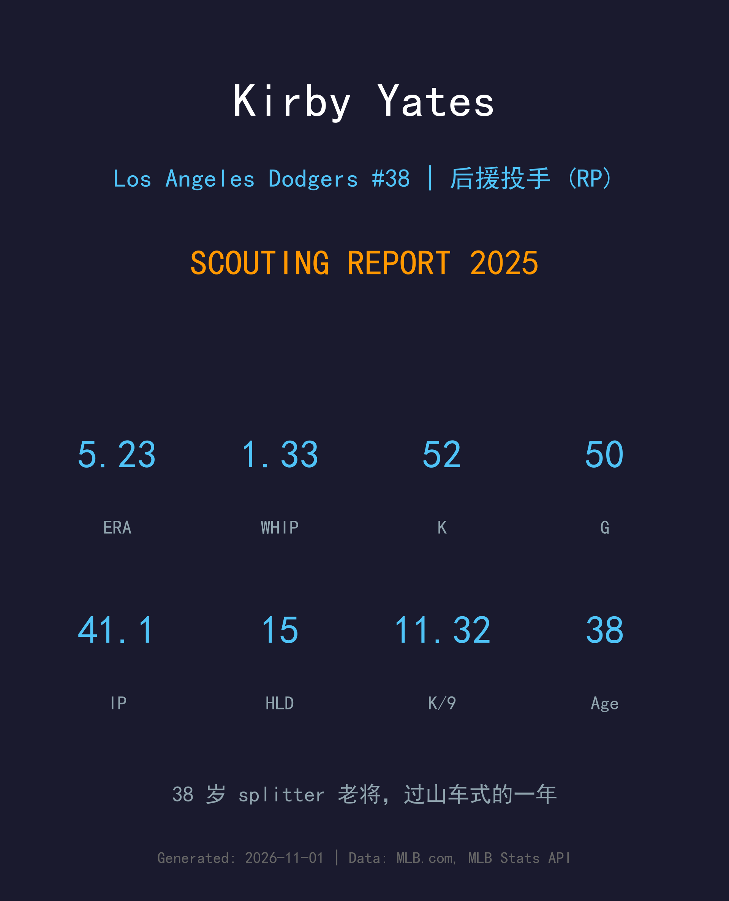
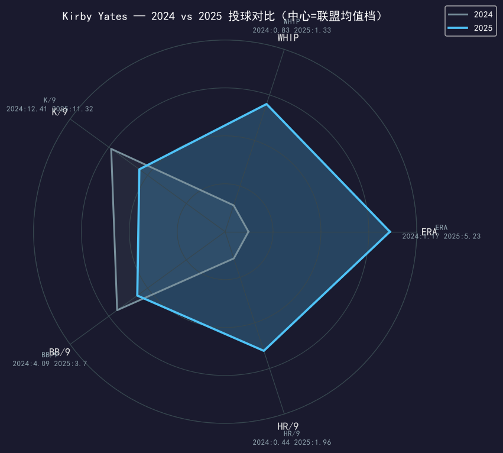
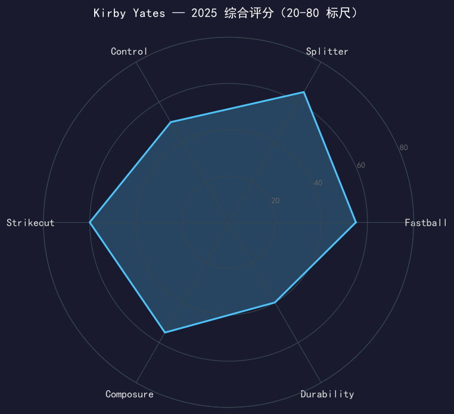

Los Angeles Dodgers #38 | 后援投手 | 右投 | 38 岁 splitter 老将，过山车式的一年

Kirby Yates 的 2025 年是职业生涯最陡峭的一次过山车：从 2024 年 1.17 自责分率的 全明星巅峰，到 5.23 的生涯最差——38 岁的他站在职业生涯的暮色里，迎来了一个充满问号的休赛期。
数据细看并非全是坏消息：K/9 11.32 仍然顶级，BB/9 3.70 甚至比去年更好，15 次中继成功说明教练组在整个常规赛季都没有放弃他。真正的杀手依然是那两颗字：全垒打——9 支全垒打、HR/9 1.96，是 2024 年（3 支）的三倍。
赛季结束后，他在 11 月 2 日宣布成为自由球员。12 年大联盟生涯、两次全明星、一颗曾令全联盟闻风丧胆的指叉球——Yates 的下一步无论在哪里，都将是「老将最后一舞」的剧本。
效力圣迭戈教士期间投出 1.19 自责分率、41 次救援成功，入选全明星，跻身联盟顶级终结者行列。
手肘重伤与漫长复健没有击垮他——他在 2023 年于亚特兰大重新站上大联盟投手丘，完成了投手生涯最艰难的回归。
33/34 救援成功、1.17 自责分率、0.83 WHIP——34 岁的他投出了生涯第二好的赛季，第二次入选全明星，并因此赢得了道奇的合约。

| 赛季 | G | W-L | ERA | WHIP | IP | SO | BB | SV/SVO | HR/9 |
|---|---|---|---|---|---|---|---|---|---|
| 2024（全明星·游骑兵） | 61 | 7-2 | 1.17 | 0.83 | 61.2 | 85 | 28 | 33/34 | 0.44 |
| 2025（道奇·下滑年） | 50 | 4-3 | 5.23 | 1.33 | 41.1 | 52 | 17 | 3/5 | 1.96 |
1.17 → 5.23 的落差是 2025 年道奇牛棚最令人唏嘘的曲线。但拆解后会发现一个老将特有的剧本：三振率仅从 12.41 滑到 11.32，保送反而改善——他的「手」还在；崩掉的是「落点」，速球与指叉的进垒高度被对手研究透后，9 支全垒打直接把 ERA 钉在 5 字头上。0.50 的胜率差与 WHIP 的暴涨，更多是被长打放大的结果，而非 stuff 的全面崩塌。
2025 赛季真实配球数据（MLB Stats API pitchArsenal）：
球速对 38 岁的手臂来说维持得惊人。问题是进垒高度偏高——被研究透的速球是老将衰退的第一张骨牌。
职业生涯的签名武器，曾让全联盟打者挥空的名刀。2025 年依然是他的三振来源，但落点偏差时会被打成平飞长打。
两球种配球（合计 100%）是他生涯一贯的极简风格——年轻时这叫「艺高人胆大」，年龄增长后则越来越依赖单颗 splitter 的完成度。
K/9 11.32 仍是联盟上游、BB/9 反而改善——从纯 stuff 指标看，Yates 的衰退幅度远没有 ERA 显示的那么陡峭。他的问题集中在「速球进垒点偏高」这一件可修复（或至少可掩饰）的技术细节上。这正是老将衰退最残忍的形态：数据断崖，手感犹存。
0.44 → 1.96 的 HR/9 暴涨，放大了所有其他指标。需要承认的是，38 岁的恢复速度意味着身体很难再把速球压到年轻时的进垒高度——这未必是技术问题，可能是生理问题。休赛期的训练重点只有一个：重新找到 splitter 与速球之间那 7 mph 速差的最佳落点组合。
11 月 2 日宣布成为自由球员后，Yates 面对的是一个对 38 岁后援极度现实的市场。他的价值在于：两届全明星的更衣室领导力、 splitter 教学价值（对队中年轻投手是活的教科书）、以及 2024 年证明过的「油箱里还有油」。一份老将底薪 + 激励条款，是他最可能的落脚点。

splitter 老将，职业生涯的暮色与余晖
C+ 级 / 老将后援
道奇 2025 季后赛夺冠之路：外卡 2-0 红人 → NLDS 3-1 费城人 → NLCS 4-0 酿酒人 → 世界大赛 4-3 多伦多蓝鸟。
Yates 未能进入季后赛名单。在牛棚名额的取舍中，教练组优先选择了季后赛内容更稳定的年轻投手与伤愈回归的老将。
Kirby Yates 的 2025 年休赛期是一次真正的「最后一舞」抉择。38 岁的自由球员后援几乎不可能再获得多年合约，他的市场将围绕「老将底薪 + 激励条款」展开——争冠球队需要他的经验，重建球队需要他的教科书价值。
理想剧本：加盟争冠队，以第七八局老将身份再燃一年
现实基准：老将底薪短约，40-50 场的中继产出
上行惊喜：复制 2023 年复出年的反弹曲线
Kirby Yates 来自夏威夷的利胡埃，2014 年登上大联盟。他的生涯是一部投手版的《老人与海》：2019 年在圣迭戈投出 1.19 自责分率的巅峰，随后是肘伤、Tommy John 手术、漫长的复健，以及在亚特兰大的重生。每一次跌落，他都爬了回来。
2024 年是他生涯最动人的章节之一——34 岁、1.17 自责分率、第二次入选全明星，用自己的名字向全联盟宣告：老将对时间的抵抗可以有多顽强。道奇因此向他伸出了橄榄枝，而他带着这份信任来到了洛杉矶。
2025 年的过山车没有击倒他，只是提醒了所有人时间的存在。11 月 2 日宣布自由球员的那一刻，Yates 的职业生涯翻到了最后一章——无论下一站在哪，这个从夏威夷走出来的 splitter 大师，都已经写下了属于自己的传奇。